import helper check_click(, 2) check_click(Pattern(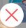).similar(0.85), 1) check_click(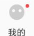, 1) sign = 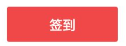 if exists(sign): print("find sign") check_click(Pattern().similar(0.85), 1) click_sleep(sign, 1) #check_click("1545788965666.png", 1) check_click(, 1) check_click(Pattern(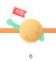).similar(0.83), 1) wheel(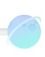, WHEEL_DOWN, 8) unfinish = Pattern().similar(0.96) bonus = Pattern(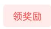).similar(0.86) back = 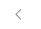 todo = Pattern(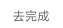).similar(0.82) confirm = Pattern(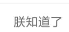).similar(0.89) for i in findAll(unfinish): click_sleep(i, 1) check_click(todo, 2) check_click(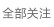, 1) check_click(back, 1) check_click(Pattern(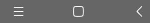).targetOffset(62,1), 2) if exists(bonus): for i in findAll(bonus): print("find bonus") click_sleep(i, 2) click_sleep(confirm, 2) click_sleep(, 2) click_sleep(todo, 3) click_sleep(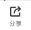, 3) click_sleep(Pattern().similar(0.72), 5) wait_click(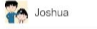, 2) click_sleep(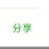, 2) click_sleep(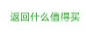, 2) click_sleep(back, 2) click_sleep(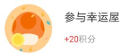, 1) click_sleep(todo, 2) wait_click(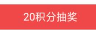, 2) click_sleep(back, 2) if exists(bonus): for i in findAll(bonus): print("find bonus") click_sleep(i, 2) click_sleep(confirm, 2)